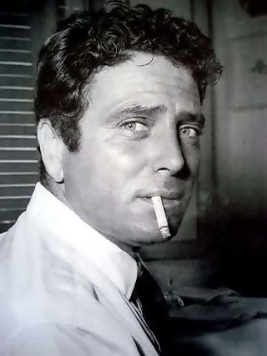

CityLoop Quest — Tropéa


Saint Leoluca, né dans l’ancienne Vibona au IXe siècle, appartient au grand courant monastique italo-grec qui a marqué la Calabre. Bien qu’il soit surtout associé à Vibo Valentia, sa mémoire rappelle le voisinage constant entre traditions grecques et latines dans les communautés de la côte.
Roger Ier de Hauteville transforme la région au XIe siècle. Le conquérant normand établit son pouvoir à Mileto, favorise des fondations religieuses et prépare l’expansion vers la Sicile. Sa politique redessine durablement les diocèses et les équilibres du sud de l’Italie.
Saint Bruno de Cologne choisit les forêts de Serra à la fin du XIe siècle. La chartreuse qu’il fonde donne naissance à Serra San Bruno et attire depuis neuf siècles pèlerins et curieux. Son idéal de solitude contraste avec l’animation maritime de Tropéa, mais les deux mondes appartiennent à la même province.
Vito Capialbi, érudit du XIXe siècle, collecte manuscrits, monnaies et antiquités. Son travail contribue à la connaissance d’Hipponion et de Vibo Valentia. Le musée archéologique installé dans le château porte aujourd’hui son nom, preuve qu’un collectionneur patient peut influencer la mémoire de tout un territoire.
Enfin, les personnages les plus présents ne sont pas toujours célèbres : maîtres tailleurs de pierre, pêcheurs, religieuses, cultivateurs d’oignons et artisans ont fabriqué le paysage quotidien. Leurs noms ont souvent disparu, mais leurs gestes restent inscrits dans les portails, les terrasses, les barques et les recettes.